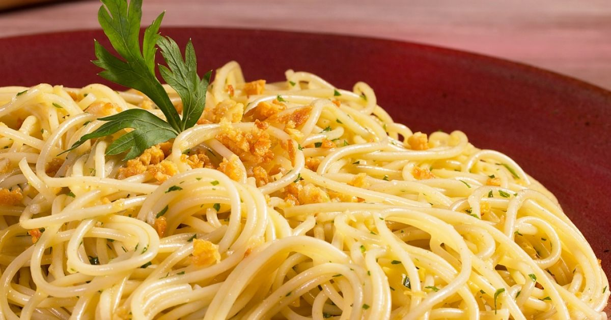

Macarrão Alho e Óleo
Rápido, econômico e cheio de sabor!Essa receita mostra como ingredientes simples podem brilhar quando usados com técnica. O chef.io te mostra como transformar esse prato clássico em algo surpreendente! 
Ideal para quando bate aquela fome repentina, o macarrão alho e óleo é um prato que une tradição e praticidade. Mas não é só jogar alho na panela: o segredo está no ponto certo de cada ingrediente.
Nesta missão, vamos equilibrar crocância, perfume e aquele toque de pimenta que faz tudo ganhar vida.
Hora de colocar a água pra ferver e afiar a faca. Vamos nessa?
Macarrão Alho e Óleo
- PREPARO
5 mins - COZIMENTO
10 mins - DESCANSO
- TOTAL
15 mins
RENDIMENTO: 2 porções
NOTA: Você pode adicionar queijo, salsinha ou até bacon crocante para turbinar!
Ingredientes
- 200g de macarrão (espaguete, penne ou similar)
- 4 dentes de alho fatiados finamente
- 3 colheres de sopa de azeite de oliva
- Sal a gosto
- Pimenta calabresa ou do reino (opcional)
- Salsinha fresca picada (opcional)
Modo de preparo
- Cozinhe a massa:
Em uma panela grande, ferva água com sal e cozinhe o macarrão até ficar al dente. Escorra e reserve um pouco da água do cozimento. - Doure o alho:
Em uma frigideira, aqueça o azeite em fogo médio e doure o alho até ficar levemente dourado e crocante. Cuidado para não queimar! - Monte o prato:
Adicione o macarrão à frigideira com o alho e azeite. Misture bem. Se quiser, coloque um pouco da água do cozimento para ajudar a soltar os sabores. - Finalização:
Acrescente a pimenta, ajuste o sal e finalize com salsinha fresca se desejar.
:max_bytes(150000):strip_icc():format(webp)/Simply-Recipes-Spaghetti-Aglio-e-Olio-METHOD-1-5b92e159425a42f3a93c72070e9e4157.jpg)
:max_bytes(150000):strip_icc():format(webp)/Simply-Recipes-Spaghetti-Aglio-e-Olio-METHOD-4-bc67ee17b46541dfb8dea221c51321ba.jpg)
:max_bytes(150000):strip_icc():format(webp)/Simply-Recipes-Spaghetti-Aglio-e-Olio-LEAD-2-c8e7e8c6edb04a8691463c6ea8cd4ba1.jpg)
A arte do alho e óleo perfeito
Simples na aparência, mas cheio de nuances. Preparar um bom macarrão alho e óleo envolve mais técnica do que parece à primeira vista.
O ponto do alho:
Crocante, mas não queimado. Alho dourado demais amarga, então retire do fogo assim que estiver levemente dourado.
Azeite aromatizado:
O azeite absorve o sabor do alho. Deixe aquecer suavemente para extrair todo o perfume sem fritar demais.
Água do cozimento é ouro:
Reserve um pouco da água do macarrão. Ela ajuda a criar uma emulsão e unir os sabores na hora de misturar tudo na frigideira.
Texturas em harmonia:
Use pimenta calabresa, queijo ou ervas frescas para variar. O contraste entre crocância e maciez faz o prato ganhar vida.
Tempo é aliado:
Em 15 minutos, você prepara uma refeição deliciosa e equilibrada. O segredo? Foco total em cada etapa rápida.
Informações Nutricionais (porção padrão)
Informações baseadas em macarrão tipo espaguete com azeite e alho. Podem variar com ingredientes adicionais.
Você concluiu a receita!
O macarrão alho e óleo é um marco na cozinha prática e cheia de sabor. Agora você entende como pequenos detalhes fazem grande diferença no resultado.
Nessa lição você aprendeu:
- Como dourar o alho no ponto certo
- A importância da água do cozimento
- Dicas para turbinar a receita com pimenta ou ervas
- Como transformar o básico em uma refeição memorável
Siga evoluindo! A jornada gastronômica continua e cada receita é um novo nível!
 Conquista desbloqueada:
Conquista desbloqueada: Ninja do Alho Dourado!